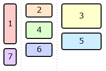
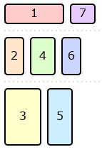

1. Introduction
This section is not normative.
Grid Layout is a layout model for CSS that has powerful abilities to control the sizing and positioning of boxes and their contents. Grid Layout is optimized for 2-dimensional layouts: those in which alignment of content is desired in both dimensions.

Although many layouts can be expressed with regular Grid Layout, restricting items into a grid in both axes also makes it impossible to express some common layouts on the Web.
This module defines a layout system that removes that restriction so that items can be placed into Grid-like tracks in just one of the axes, while stacking them one after another in the other axis. Items are placed into the column (or row) with the most remaining space based on the layout size of the items placed so far. This module also extends CSS Grid with this new grid item placement strategy and CSS Box Alignment with new alignment features.
1.1. Background and Motivation
1.1.1. Waterfall Layout with Auto-placed Items
Masonry layout, sometimes also called “waterfall layout”, is a common Web design pattern where a number of items—commonly images or short article summaries—are placed one by one into columns in a way that loosely resembles stone masonry. Unlike multi-column layout, where content is placed vertically in the first column until it must spills over to the second column, masonry layout selects a column for each new item such that it is generally closer to the top of the layout than items placed later.
Here, each item has a different height (depending on the content and the width of the column), and inspecting the DOM reveals (as the visual content itself gives no indication of ordering) that each item has been placed into the column with the smallest height so far.
This layout superficially looks similar to multi-column layout; but it has the advantage that scrolling down will naturally lead to "later" items in the layout (that is, those less relevant in the search results).
It’s not possible to achieve this layout using earlier CSS layout models, unless you know up-front how tall each item will be, or use JavaScript for content measurement or placement.
Using a masonry container together with auto-positioned items yields this type of masonry layout.
1.1.2. One-dimensional Grid Layout
Grid layout allows for powerful track sizing and explicit placement in two axes, but sometimes a layout only needs alignment of its items in one dimension.
Using a masonry container together with explicitly-positioned items allows for this type of one-dimensional grid layout.

1.2. Value Definitions
This specification follows the CSS property definition conventions from [CSS2] using the value definition syntax from [CSS-VALUES-3]. Value types not defined in this specification are defined in CSS Values & Units [CSS-VALUES-3]. Combination with other CSS modules may expand the definitions of these value types.
In addition to the property-specific values listed in their definitions, all properties defined in this specification also accept the CSS-wide keywords as their property value. For readability they have not been repeated explicitly.
2. Masonry Layout Model
Masonry layout lays out items into pre-defined tracks similar to grid layout in one axis (called the grid axis), but flows them freely similar to flex layout in the other (called the stacking axis). Similar to grid layout and unlike flex layout, masonry layout’s auto-placement distributes items across the tracks to keep the lengths of those tracks as similar as possible.
Grid items are formed and blockified exactly the same as in a regular grid container.
(For clarity, grid items and grid tracks of a masonry container can be referred to as masonry items and masonry tracks.)
All CSS properties work the same as in a regular grid container unless otherwise specified by this specification. For example, order can be used to specify a different layout order for the items.
Note: Subgrid items are supported, but subgridding only occurs in the grid axis; see § 3.2 Subgrids for details.
A masonry container is a box whose contents participate in masonry layout. A masonry container is a column masonry container if its stacking axis is the block axis, or a row masonry container if its stacking axis is the inline axis.
| Column Masonry |
grid-template-columns: 1fr 2fr 3fr; |  |
|---|---|---|
| Row Masonry |
grid-template-rows: 1fr 2fr 3fr; |  |
2.1. Reordering and Accessibility
Although masonry layout generally progresses in a forwards fashion (placing the next item down or endward of the current item, matching the natural "reading order"), it can switch between these two in a seemingly arbitrary manner. In simple cases, the item-slack property can help reduce the feeling of backtracking due to small sizing differences in the block axis when laying out auto-placed items. But when auto-placement is mixed with explicit placement or spanning items, some amount of backtracking may occur.
< section class = masonry > < div class = item > 1</ div > < div class = item > 2</ div > < div class = "item tall" > 3</ div > < div class = "item wide" > 4</ div > < div class = item > 5</ div > < div class = item > 6</ div > < div class = item > 7</ div > </ section > < style > . masonry { //FIXMEdisplay : masonry or something grid-template-columns : repeat ( 5 , auto ); } . item { height : 50 px ; } . item . wide { grid-column : span 3 ; } . item . tall { height : 90 px ; } </ style >
Authors should be aware of these possibilities and design layouts where such backtracking is minimized so that focus and reading order can be more easily followed. Alternatively, if the items do not have an inherent order, use the reading-flow property to allow the UA to re-order the items for reading and linear navigation.
Or should reordering be the default behavior for auto-placed items here?
-
Using appropriate values for item-slack, i.e. values large enough to avoid gratuitous differentiation among similarly-sized tracks, but not so large that meaningful differences get ignored.
-
Using explicit placement in ways that help group related items together, rather than ways that disrupt the natural order of items
-
Avoiding the combination of mixed span sizes in the grid axis and disparate item sizes in the stacking axis, which can cause items to get pulled out of order (see example above).
As with grid layout and flex layout authors can use the order property to re-order items; the same caveats apply. See CSS Grid Layout 2 § 4 Reordering and Accessibility and CSS Flexbox 1 § 5.4.1 Reordering and Accessibility.
2.2. Establishing Masonry Layout
-
display: masonry (or a synonym, such as display: stack)
-
item-pack: collapse (see item-pack)
-
a collapse value for grid-template-rows/grid-template-columns, indicating that axis as the stacking axis of a grid container
3. Masonry Track Specification
In the grid axis, the full power of grid layout is available for track specification:
-
Track sizes, line names, and areas can be specified on the masonry container’s grid axis, just like in grid layout.
-
The explicit grid and implicit grid are formed in the same way as for a regular grid container.
-
Items can be placed against these grid templates just as in grid layout.
However, auto-placed items contribute sizing to all tracks, not just the track into which they are ultimately placed; see § 3.4 Grid Axis Track Sizing.
Note: This is because auto-placed items must be laid out as they are placed, so that each track knows how “full” it is (and therefore which track should receive the next auto-placed item); thus, the tracks themselves must already have a definite size so that the items know their available space during layout.
3.1. Declaring Masonry Track Templates: the grid-template-* properties
The grid-template-* and grid-auto-rows/grid-auto-columns properties (and their shorthands) apply in the grid axis of the masonry container and establish tracks just as on regular grid containers. (They are ignored in the stacking axis.)
What should be the initial track listing? [Issue #10869]
3.1.1. Intrinsic Tracks and repeat()
Should we allow auto-repeated content-based tracks? Is this a reasonable definition for them? Should they work also in Grid Layout somehow? [Issue #10915]
In Grid Layout, all grid items are placed in the grid before the grid tracks are sized. This implies that auto-fill/auto-fit repetition can’t include intrinsically sized tracks such as auto (either in the repeat() function or alongside it in the fixed portion of the track list), as that would require the layout algorithm to have already determined which items would go in those tracks, to determine how large the tracks are, to determine how many repetitions fit in the available space.
In Masonry Layout, as masonry item placement and layout are intertwined and somewhat simplified, this restriction is no longer strictly required. It requires a slightly heuristic definition of sizing, but auto repetition can include intrinsically-sized tracks in a masonry container (and the initial value of masonry-template-tracks uses this!).
-
Ignore item placement. (That is, assume all items have masonry-track: auto.)
-
If a masonry item has a span larger than 1, then for each of its intrinsic sizes that it would contribute to the virtual masonry item, first subtract the combined size of the gaps it would span, and divide by its span. Then treat it as being a span-1 item with those sizes.
Any intrinsically-sized tracks are then treated as having the size calculated by this simplified layout (including those in repeat() arguments, taking from their corresponding single repetition) for the purpose of determining how many repetitions the repeat() functions resolve to.
Motivation
This simplified layout heuristic is defined to be "good enough", while remaining fast and consistent.
Ignoring placement is required just to make the concept coherent; before you know how many repetitions you need, you can’t tell what track an item with a definite placement will end up in.
By chopping spanning items into span-1 items, this avoids the possible need to expand a repeat() multiple times, and the incoherent possibility of getting different sizes for the same keyword across the repetitions.
It also makes the layout as a whole significantly cheaper, as you only need to consider each unique track size; you don’t even really need to do any repeat() expansion. That is, in auto repeat(auto-fill, min-content auto), both of the auto keywords will resolve to the same size under this heuristic layout; you can just figure out what a masonry-template-tracks: auto and masonry-template-tracks: min-content would each result in, and use those sizes.
3.2. Subgrids
Subgridding allows nested masonry containers (and grid containers) to share track sizes. If the parent’s corresponding axis is a grid axis, the subgridded axis is taken from the parent container as specified for grid containers; if the parent’s corresponding axis is a stacking axis, the subgridded axis acts like masonry.
Note: If this results in masonry in both axes, it is resolved as normal for masonry containers with double-axis masonry templates, i.e. it acts like grid-template-columns: none; grid-template-rows: masonry.
In masonry layout, auto-placed subgrids don’t inherit any line names from their parent grid, because that would make the placement of the item dependent on layout results; but the subgrid’s tracks are still aligned to the parent’s tracks as usual.
<style> .grid{ //FIXME: display: inline-grid; or something grid-template-rows: auto auto100 px ; align-content : center; height : 300 px ; border : 1 px solid; } .grid > *{ margin : 5 px ; background : silver; } .grid >:nth-child ( 2 n ) { background : pink; } .grid subgrid{ display : grid; grid : subgrid / subgrid; grid-row : 2 / span2 ; grid-gap : 30 px ; } .grid subgrid > *{ background : cyan; } </style>
< div class = "grid" > < item > 1</ item > < item > 2</ item > < item > 3</ item > < subgrid > < item style = "height:100px" > subgrid.1</ item > < item > sub.2</ item > < item > s.3</ item > </ subgrid > < item > 4</ item > < item > 5</ item > < item style = "width: 80px" > 6</ item > < item > 7</ item > </ div >
Note how the subgrid’s first item ("subgrid.1") contributes to the intrinsic size of the 2nd row in the parent grid. This is possible since the subgrid specified a definite position so we know which tracks it will occupy. Note also that trying to subgrid the parent’s stacking axis results in the subgrid getting masonry layout in its inline axis.
A subgrid that is a masonry container can be referred to as a submasonry.
3.3. Track Repetition: the repeat() notation
This specification introduces new keywords and masonry-specific behavior for the repeat() notation.
3.3.1. repeat(auto-areas)
The new auto-areas value for the repeat() notation represents the number of repetitions necessary for the total number of explicit tracks to match the grid-template-areas / masonry-template-areas value in effect in the corresponding axis. If multiple tracks are listed for the repetition, the final repetition is truncated as necessary to produce the correct number of tracks.
Note: Unlike auto-fit—which always repeats at least once and always repeats the track listing entirely—the number of repetitions for auto-areas can be zero (if there are already enough explicit tracks), and the final repetition can be partial.
If grid-template-areas / masonry-template-areas is none, this value behaves as auto-fit.
Note: This value applies both to regular grid containers and to masonry containers.
It’s unclear if we actually need this value. Note that the explicit grid already takes values from grid-auto-columns/grid-auto-rows/masonry-auto-tracks as needed to match the number of template areas. [Issue #10854]
3.3.2. repeat(auto-fit)
In masonry containers (as in regular grid containers) auto-fit acts like auto-fill, but with empty tracks collapsed. However, because placement occurs after track sizing, masonry containers use a heuristic to determine if a track will be occupied:
-
All tracks occupied by explicitly placed items are considered occupied.
-
With the sum of the spans of all auto-placed items as N, all unoccupied tracks up to the Nth such track are considered occupied.
All tracks produced by the auto-fit repetition and considered unoccupied by this heuristic are assumed “empty” and are collapsed. A collapsed track cannot accept placement of auto-placed items.
Note: It is possible for an auto-placed item to be placed in a track when auto-fill is used that would be collapsed if auto-fit is used if there are auto-placed items with a span greater than 1 mixed with explicitly-placed items that leave gaps too small for the auto-placed items.
3.4. Grid Axis Track Sizing
Track sizing works the same as in CSS Grid, except that when considering which items contribute to intrinsic sizes:
-
All items explicitly placed in that track contribute, and
-
All items with an automatic grid position contribute (regardless of whether they are ultimately placed in that track).
-
Items A, B, and C have no explicit position.
-
Item D is explicitly placed into the first column.
In this case, items A, B, C, and D all contribute to sizing the first column, while only A, B, and C (and not D) contribute to the second column.
In the case of spanning items with an automatic grid position, they are assumed to be placed at every possible start position, and contribute accordingly.
-
At grid line 1, contributing 110px to each of the first two tracks.
-
At grid line 2, contributing 120px to the second track.
-
At grid line 3, contributing 120px to the fourth track.
-
At grid line 4, contributing 110px to the fourth and fifth tracks.
Note: This algorithm ensures that each track is at least big enough to accommodate every item that is ultimately placed in it, and does not create dependency cycles between placement and track sizing. However, depending on the variation in sizes, tracks could be larger than necessary: an exact fit is only guaranteed if all items are explicitly placed in the grid axis or all items are the same size (or matching multiples of that size, in the case of spanning items).
3.4.1. Subgrid Item Contributions
When sizing the tracks of either a regular grid container or a masonry container, a submasonry has special handling of items that have an automatic grid position:
-
Any such item is placed into every possible grid track that could be spanned by the submasonry. (If the submasonry has a definite grid position, thus only the spanned tracks; if it has an automatic grid position, then all tracks in the parent grid.)
-
Any such item receives the largest margin/border/padding contribution of each edge at which it could hypothetically be placed. If the item spans the entire subgrid, it receives both. (See CSS Grid Layout §9.)
3.4.2. Optimized Track Sizing
Track sizing can be optimized by aggregating items that have the same span size and placement into a single virtual item as follows:
-
Separate all the masonry items into item groups, according to the following properties:
-
the span of the item
-
the placement of the item, i.e. which tracks it is allowed to be placed in
-
the item’s baseline-sharing group
Note: For example, an item with span 2 placed in the second track will be in a different group than an item with span 2 that has an automatic grid position.
-
-
For each item group, synthesize a virtual masonry item
that has the maximum of every intrinsic size contribution
among the items in that group.
If the items apply baseline alignment, determine the baselines of the virtual masonry item by placing all of its items into a single hypothetical grid track and finding their shared baseline(s) and shims. Increase the group’s intrinsic size contributions accordingly.
- Place hypothetical copies of each virtual masonry item into the grid axis tracks in every position that the item could potentially occupy, and run the track sizing algorithm with those items. The resulting track sizes are the masonry container’s track sizes.
Note: This optimization should give the same results as the track sizing description above; if not this is an error, please report it to the CSSWG.
4. Masonry Placement
In the grid axis, items can be explicitly placed into tracks and span them using the familiar grid-placement properties’ syntax. Auto-placement, however, uses the § 4.3 Masonry Layout and Placement Algorithm, placing each item with an automatic grid position into the “shortest” masonry track available.
4.1. Specifying Masonry Item Placement: the grid-column-* and grid-row-* properties
The grid-column-* and grid-row-* properties (and their shorthands) apply in the grid axis of the items and establish placement just as in regular grid layout.
4.2. Placement Precision: the item-slack property
| Name: | item-slack |
|---|---|
| Value: | <length-percentage> | infinite |
| Initial: | 1em |
| Applies to: | masonry containers |
| Inherited: | no |
| Percentages: | relative to the grid-axis content box size of the masonry container |
| Computed value: | a computed <length-percentage> value |
| Canonical order: | per grammar |
| Animation type: | as length |
Masonry containers are filled by placing each masonry item in whichever masonry track is currently the least filled. When multiple tracks are tied for least-filled, placing the items in order looks good. But if tracks are only very slightly different heights, it can look strange to have them not fill in order, as the height differences aren’t perceived as meaningfully different.
The item-slack property specifies what the threshold is for considering tracks to be “the same height”, causing them to fill in order.
- <length-percentage>
-
Specifies the tie threshold for the masonry container. Placement positions are considered to be equally good (“tied”) if they are within the specified distance from the shortest position.
Note: The initial value is a “small” distance (1em) that is probably appropriate to represent “close enough”.
- infinite
-
Specifies an infinite tie threshold. This makes items distribute themselves strictly in order, without considering the length of the tracks at all.
Note: This value can result in consecutive items being placed in dramatically different positions in the stacking axis, which can be confusing to readers. If the initial value (`1em`) is too small, consider a larger value (such as `10em` or `50vh`) instead of `infinite`.
4.3. Masonry Layout and Placement Algorithm
For each of the tracks in the grid axis, keep a running position initialized to zero. Maintain also a auto-placement cursor, initially pointing to the first line.
For each item in order-modified document order:
-
If the item has a definite grid position in the grid axis,
use that placement.
Should this also update the placement cursor?
Otherwise, resolve its grid axis placement using these substeps:
- Starting at the first grid axis line in the implicit grid, find the largest running position of the grid axis tracks that the item would span if it were placed at this line, and call this position max_pos.
- Repeat the previous step for each successive line number until the item would no longer fit inside the grid.
- Let possible lines be the line that resulted in the smallest max_pos, and all lines that result in a max_pos within the tie threshold of this max_pos.
- Choose the first line in possible lines greater than or equal to the auto-placement cursor as the item’s position in the grid axis; or if there are none such, choose the first one.
- Update the auto-placement cursor to point to item’s last line.
- Place the item in its grid axis tracks at the maximum of the running positions of the tracks it spans.
-
Calculate the size of the item’s containing block
and then layout the item.
Set the running position of the spanned grid axis tracks
to
max_pos + outer size + grid-gap.
Note: This algorithm chooses the track that would result in the item being placed as highly as possible. If there are ties, it chooses the earliest such track, after the most recently placed item if possible (ensuring that it always “moves forward” even in the presence of ties).
4.3.1. Containing Block
The containing block for a grid item participating in masonry layout is formed by its grid area in the grid axis and the grid container’s content box in the stacking axis.
4.3.2. Placement and Writing Modes
Note: Like all of grid layout, masonry layout and placement is sensitive to the writing mode. For example, for direction: rtl, items are placed right-to-left rather than left-to-right, whether the inline axis is a grid axis or a stacking axis.
<style> .grid{ //FIXME display: inline-grid; or something direction: rtl; grid-template-columns : repeat ( 4 , 2 ch ); border : 1 px solid; } item{ background : silver} item:nth-child ( 2 n +1 ) { background : pink; height : 4 em ; } </style>
< div class = "grid" > < item > 1</ item > < item style = "grid-column:span 2" > 2</ item > < item > 3</ item > < item > 4</ item > </ div >
<style> .grid{ //FIXME display: inline-grid; or something direction: rtl; width : 10 ch ; column-gap : 1 ch ; grid-template-rows : repeat ( 4 , 2 em ); border : 1 px solid; } item{ background : silver} item:nth-child ( 2 n +1 ) { background : pink; width : 4 ch ; } </style>
< div class = "grid" > < item > 1</ item > < item style = "grid-row:span 2" > 2</ item > < item > 3</ item > < item > 4</ item > </ div >
5. Sizing Grid Containers
Sizing Grid Containers works the same as for regular grid containers but with the following addendum for the stacking axis: The max-content size (min-content size) of a grid container in the stacking axis is the size of the masonry box in that axis when sized under a max-content constraint (min-content constraint).
<style> .grid{ //FIXME display: inline-grid; or something grid-template-columns:50 px 100 px auto; grid-gap : 10 px ; border : 1 px solid; } item{ background : silver; margin : 5 px ; } </style>
< div class = "grid" > < item style = "border:10px solid" > 1</ item > < item > 2</ item > < item > 3</ item > < item style = "height:50px" > 4</ item > < item > 5</ item > < item > 6</ item > </ div >
6. Alignment and Spacing
Gutters are supported in both axes. In the stacking axis, the gap is applied between the margin boxes of each pair of adjacent items. Margins do not collapse in either axis.
In the grid axis, alignment works the same as in a regular grid container.
In the stacking axis, content-distribution is applied to the content as a whole, similarly to how it behaves in block containers. More specifically, the alignment subject is the masonry box, which is the smallest rectangle bounding the margin boxes of all the grid items.
Note: There is only ever one alignment subject for these properties in the stacking axis, so the unique align-content / justify-content values boil down to start, center, end, and baseline alignment. (The behavior of normal and stretch is identical to start, and the distributed alignment values behave as their fallback alignments.) If the grid items overflow the grid container’s content box in the stacking axis, then the masonry box will be larger than the grid container’s content box.
Should alignment in the stacking axis do something more sophisticated? What should that be?
6.1. Baseline Alignment in the stacking axis
Item baseline alignment inside the grid axis tracks works as usual for a regular grid container, and the grid container’s baseline is determined the same as for a regular grid container in that axis.
Baseline alignment is not supported in the stacking axis. The first baseline set of the grid container in this axis is generated from the alignment baseline of the first grid item in the first occupied track, and the last baseline set from the last grid item placed.
We could support baseline alignment in the first row. Do we want to?
Should the last baseline come from the last lowest item placed instead?
7. Fragmentation
7.1. Fragmentation in the stacking axis
Each grid axis track is fragmented independently in the stacking axis. If a grid item is fragmented, or has a forced break before/after it, then the running position for the tracks that it spans in the grid axis are set to the size of the fragmentainer so that no further items will be placed in those tracks. An item that is split into multiple fragments retains its placement in the grid axis for all its fragments. A grid item that is pushed, however, is placed again by the next grid container fragment. Placement continues until all items are placed or pushed to a new fragment.
7.2. Fragmentation in the Grid Axis
Fragmentation in the grid axis with masonry layout in the other axis is also supported. In this case the fragmentation behaves more like in a regular grid container; however, there’s a separate step to determine which grid-axis track each item is placed into, before fragmentation occurs.
8. Absolute Positioning
Grid-aligned absolute-positioned descendants are supported in masonry containers just as for regular grid containers; however, in the stacking axis there exist only two lines (in addition to the auto lines) for placement:
-
line 1 (line -2) corresponds to the start edge of the masonry box
-
line 2 (line -1) corresponds to the end edge of the masonry box
It might be useful to define a static position in the stacking axis. Maybe it could defined as the max (or min?) current running position of the grid-axis tracks at that point? Or the end of the item before it?
9. Graceful Degradation
Typically, a masonry design can be expected to degrade quite nicely in a UA that supports Grid layout but not masonry layout.
Here’s an example to illustrate this.
display : grid; //FIXME item-flow: collapse; /* ignored in UAs that don't support masonry layout */ grid-template-columns:150 px 100 px 50 px ;
This creates a layout with three columns, but will have "more gaps" in the block axis if the UA doesn’t support masonry layout. Here’s what it looks like with Masonry support for comparison:
Appendix A: Generic Layout Item Flow Controls: the item-* properties
This section is likely to move to another spec, such as [css-display-4], since it affects multiple display types.
Multiple layout modes in CSS place their children as atomic "items" organized into rows and/or colummns in their container, and allow the author to configure their ordering and placement. The item-* properties provide generic controls for these ordering and placement options, encapsulating the layout-specific flex-flow and grid-auto-flow properties.
| Flow-oriented Proposal | Track-oriented Proposal | Value Space | Description | Existing flex property | Existing grid property |
|---|---|---|---|---|---|
| item-direction | item-track | auto | row | column | row-reverse | column-reverse | Controls whether items are placed into rows or columns, and whether within those tracks they are ordered start-to-end or end-to-start. | flex-direction | grid-auto-flow |
| item-wrap | item-cross | [ auto | nowrap | wrap ] || [ normal | reverse ] | wrap-reverse | Controls whether items are wrapped in the axis opposite to that controled by the row/column property, and if so if they are placed in start-to-end or end-to-start order. | flex-wrap | Introduced into grid-auto-flow in this level. |
| item-pack | item-pack | normal | dense || balance | Configures how items are packed into their tracks. | grid-auto-flow | |
| item-slack | item-slack | normal | <length-percentage> | infinite | Defines a layout-specific amount of "slack" in placement decisions. |
The CSSWG is still figuring out how these properties should be named and fit together. [Issue #11480]
Item Flow Axis: item-track/item-direction
| Name: | item-direction, item-track |
|---|---|
| Value: | auto | row | column | row-reverse | column-reverse |
| Initial: | auto |
| Applies to: | flex containers, grid containers, masonry containers |
| Inherited: | no |
| Percentages: | N/A |
| Computed value: | as specified |
| Canonical order: | per grammar |
| Animation type: | discrete |
This property controls whether items are placed as rows or columns, and whether within those tracks they are ordered start-to-end or end-to-start.
There two open debates on this property: a) what should it be called and b) does it describe the primary direction of placement, or the orientation of the tracks into which items are placed; in other words, is the primary axis defined by this property the primary placement axis or the primary track axis. These are identical for flex layout and grid layout, but differ for masonry layout whose primary placement direction is across its tracks. [Issue #11480]
- auto
-
Computes to either row or column depending on the layout mode:
-
On flex containers and grid containers, computes to row.
-
On masonry containers, if grid-template-rows is not none and grid-template-columns is none, computes to the value representing row tracks; otherwise computes to the value representing column tracks.
-
- row
-
Track-oriented Option Represents placement into rows, i.e. tracks or lines parallel to the inline axis. Items fill those rows in start-to-end order.
Flow-oriented Option Represents row-primary item placement, i.e. placing items start-to-end in the inline axis, producing flex row lines in flex layout, and column grid tracks in masonry layout.
- column
-
Track-oriented Option Represents placement into columns, i.e. tracks or lines parallel to the block axis. Items fill those columns in start-to-end order.
Flow-oriented Option Represents column-primary item placement, i.e. placing items start-to-end in the block axis, producing flex column lines in flex layout, and row grid tracks in masonry layout.
- row-reverse
-
Same as row, but using end-to-start placement order.
- column-reverse
-
Same as column, but using end-to-start placement order.
Item Cross Axis Placement Mode: item-cross/item-wrap
| Name: | item-wrap, item-cross |
|---|---|
| Value: | [ auto | nowrap | wrap ] || [ normal | reverse ] | wrap-reverse |
| Initial: | auto |
| Applies to: | flex containers, grid containers, masonry containers |
| Inherited: | no |
| Percentages: | N/A |
| Computed value: | as specified |
| Canonical order: | per grammar |
| Animation type: | discrete |
Controls placement in the axis opposite to the primary axis.
- auto
-
Computes to nowrap on flex containers, and wrap on everything else.
- nowrap
-
Items are placed in the primary placement axis forever, even if they run out of room. In flex layout this creates a single-line flex container; in grid layout this creates implicit tracks in the primary placement axis as necessary.
- wrap
-
Items wrap when the primary placement axis runs out of space. In flex layout this creates a multi-line flex container; in grid layout auto-placement algorithm moves to the next row/column when it runs out of explicit tracks in the primary placement axis.
- normal
-
Items are placed in start-to-end order in the axis opposite to the primary track axis.
In flex layout and grid layout, this controls the direction that new tracks (flex lines or grid tracks) are placed in.
In masonry layout, for track-oriented syntax this controls which track is selected when several are tied for equal height; for flow-oriented syntax this controls which direction items fill their track in.
- reverse
-
Items are placed in end-to-start order in the axis opposite to the primary track axis.
- wrap-reverse
-
Computes to wrap reverse.
Note: This value exists for consistency with the existing flex-wrap value.
The interpretation and naming of this property depends on the interpretation of axes for item-direction/item-track. [Issue #11480]
Item Placement Packing Mode: the item-pack property
| Name: | item-pack |
|---|---|
| Value: | normal | dense || balance |
| Initial: | normal |
| Applies to: | flex containers, grid containers, masonry containers |
| Inherited: | no |
| Percentages: | N/A |
| Computed value: | as specified |
| Canonical order: | per grammar |
| Animation type: | discrete |
This property controls how items are distributed among the tracks in a layout-specific way.
- normal
-
Uses the default packing strategy for the layout mode.
- dense
-
Allows backtracking to place items in earlier spaces that were skipped. (Such spaces can exist because earlier items were too big for those spaces.)
For example, in flex layout this allows placing items on earlier lines that still have enough empty space left over.
- balance
-
In flex layout, this value balances the amount of content on each line (including the last line), similar to text-wrap-style: balance.
One of the proposals for switching into masonry layout is to add a collapse value to this item-pack property. [Issue #11243]
Should dense packing apply to masonry? It’s much more expensive in masonry, as you have to lay out the element in every possible gap spot to see if it’s short enough to fit; Grid gets to just juggle some integers. [Issue #9326]
Item Placement Shorthand: the item-flow shorthand
| Name: | item-flow |
|---|---|
| Value: | <'item-direction'> || <'item-wrap'> || <'item-pack'> || <'item-slack'> |
| Initial: | see individual properties |
| Applies to: | see individual properties |
| Inherited: | see individual properties |
| Percentages: | see individual properties |
| Computed value: | see individual properties |
| Animation type: | see individual properties |
| Canonical order: | per grammar |
This shorthand property sets all its item-* longhand properties in a single declaration.
10. Acknowledgements
Thanks goes to Cameron McCormack who wrote a masonry layout explainer document (from which was lifted the Background chapter) and presented it to the CSSWG, and to Mats Palmgren who developed the original version of this specification. Thanks also to everyone who provided feedback on the initial proposal for this feature.
11. Security Considerations
As a layout specification, this spec introduces no new security considerations beyond that exposed by CSS layout in general.
12. Privacy Considerations
As a layout specification, this spec introduces no new privacy considerations beyond that exposed by CSS layout in general.
Changes
Additions Since Level 2
The following features have been added since Level 2:
- Added masonry layout.
- Added the item-flow property and its longhands, as generic controls for item ordering and placement. See Appendix A: Generic Layout Item Flow Controls: the item-* properties. (Issue 11480)
Recent Changes
The following changes have been made since the 3 October Working Draft:
-
Dropped the masonry-specific track template and placement properties. (Issue 11243)
-
Introduced item-flow and the item-* longhands, replacing masonry-flow and related properties. (Issue 11480)
-
Renamed masonry-slack to item-slack.